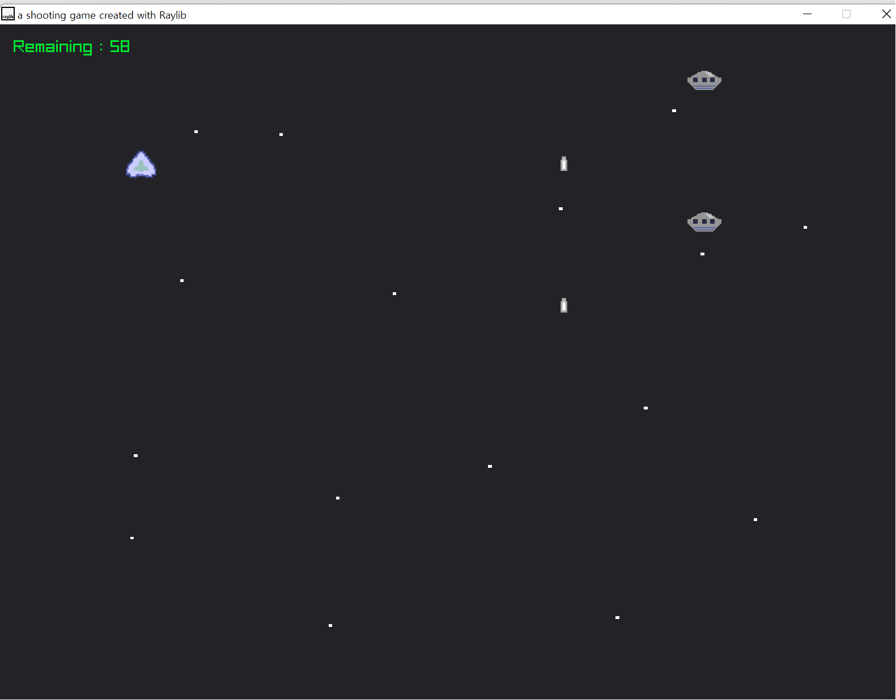

computer space war game

Recently,I read a book about the technology of video games in 70's and 80's.
The first chapter of the book describes the big event in game industry 1971, "Computer Space".
I read about this "Computer Space" arcade game, and I thought it was really cool.
So, I thought it would be fun to make one similar to this classic arcade game.
It is a simple game which a player controls a spacecraft in order to avoid ufos' attacks and destroy them.
The tools I have used are the following:
- Pixel Studio - for pixel art. created spacecrafts and background images.
- Novation Launchkey Mini and Abelton Live Lite - for sound effects. made a small missile shooting sound effect when a player presses a spacebar
- Raylib Library - for coding. written in C.
I have programmed some simeple programs before,
but it was my first experience to play with pixel arts and sound effects.
I enjoyed the process of making everything (sounds, art, code) by myself,
and the whole exeperience was satisfying, regardless of the final result.
I should have made an ambient music for the background of the game, and
taken more time on spacecrafts pixel art. They all look too flat.
For the next project, I will surely take much more time on code, because I want to
get better at programming, writing efficient and clear codes.